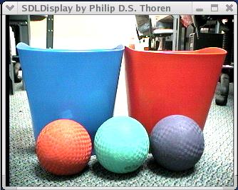
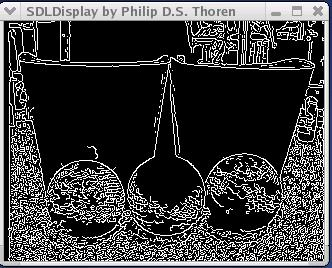
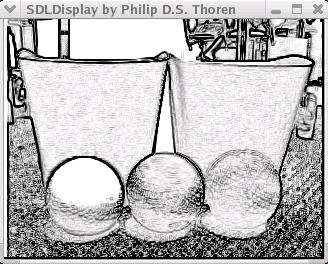
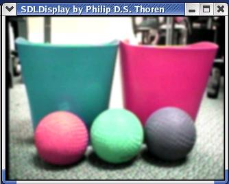
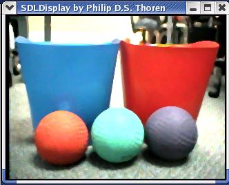
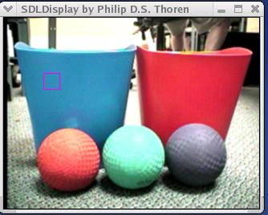
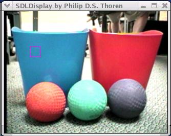
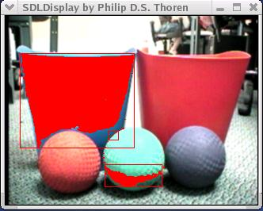
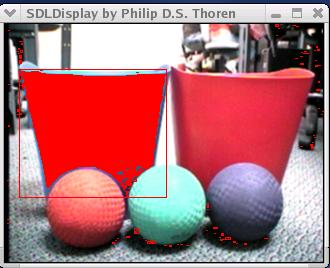
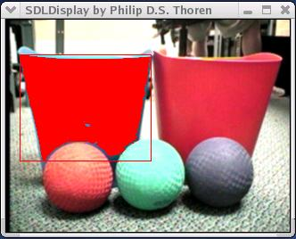

|
|||||||
| [ Home ] | [ Software ] | [ Curriculum ] | [ Hardware ] | [ Community ] | [ News ] | [ Publications ] | [ Search ] |
|
Phission Control FunctionsPhission is a new high-performance image processing system for Pyro. It is written in C++, but has methods in Python to access the underlying code. This system is very fast, but has a bit of a learning curve due to its sophisticated functions. Control Functions are in charge of Phission utilities, such as starting and stopping Phission. They are usually used in class constructors and destructors, as well as from the command line.
setup(capturechannel, capturewidth = 320, captureheight = 240) This function starts up Phission, takes control of the capture device (framegrabber), and opens a display window.
Parameters
destroy() This function shuts down Phission and releases the capture device.
pause() This function can be used to pause phission. This can be helpful if you want to freeze the output display so that you can take a better look at filtered frame.
play() This function will make phission resume running the filters after pause has been called.
Filter FunctionsFilter Functions do the actual image manipulations. These functions can be called to apply edge detection, blurring, histograming, and motion filtering to the video stream itself. Calling any of these functions will remove all previous filters that have been applied. Any of these filters will continue to run until a new filter (or no_Filter) is inserted.
no_Filter() This function does no filtering. It basically directly connects the capture device to the display window.

canny_Filter() This function will run a Canny edge detection.

sobel_Filter() This function will run a Sobel edge detection.

gaussianBlur_Filter() This function will run a Gaussian blur filter.

medianBlur_Filter() This function will run a median blur filter.

histogramRGB_Filter(x, y, size) This function will run a histogram filter on part of the image. The color space used will be RGB. Basically the histogram will be run on a cube with coordinates (x - size, y - size) to (x + size, y + size). Use the function getHistData() to retrieve the results of the histogram.
Parameters

histogramHSV_Filter(x, y, size) This function does the same thing as histogramRGB_Filter, however, the HSV color space is used and the function getHistData() will return its result in terms of HSV values.
Parameters

motion_Filter() This filter will blob on motion in an image. Use the Blob utilities, described below, to get useful information about the largest blob.
ColorTrackRGB_Filter(color, tol) This will blob on a color in the RGB color space. Use the Blob utilities to get useful information about the largest blob.
Parameters

ColorTrackHSV_Filter(color, tol) This does the same thing as the last filter but in the HSV color space. The parameters are 3 value tuples in the form of (H, S, V).
Parameters

SpotColorTrackRGB_Filter(x, y, size, tol) This is similar to the color track filters except that insted of specifying a color to track, you specify a location in the image and a histogram filter is run once to detirmine the color at that location. Then blobing is done on that color with the specified tolerance.
Parameters

SpotColorTrackHSV_Filter(x, y, size, tol) This is the same as the last function except it is done in the HSV color space.
Parameters
Data Collecting FunctionsData Collecting Functions are used to get information back from your video stream. This information can be used in programming to allow your robot (or simulated robot) to act differently depending on what it "sees."
getHistData() This function will retrieve the results of the last histogram run in the form of a 3 value tuple. if the color space the histogram ran in is RGB, then the tuples values will be (R, G, B). And if the color space used was HSV, then the tuple values will be (H, S, V). This can also be used just after the SpotColorTrack filters to find out the value of the color that is being blobbed.
getMaxBlob() This function will return a blob data object. This is how to get all the different fields stored in the blob object:
max_blob = camera.getMaxBlob()
getMaxBlob_cx() This function will return the x coordinate of the center of the largest blob.
getMaxBlob_cy() This function will return the y coordinate of the center of the largest blob.
getMaxBlob_mass() This function will return the mass of the largest blob.
Examples
Apply Random FilterThe following example will continuously loop, changing the current filter every 50 iterations. The new filter will be randomly chosen from seven of the currently supported filters. Each time the filter is changed, the name of the new filter (as well as its parameters) will be displayed.
from pyrobot.brain import Brain
from time import *
from random import *
from phissioncamera import *
class SimpleBrain(Brain):
def setup(self):
self.counter = 0 # initialize counter to 0
def step(self):
self.counter += 1 # increment counter
if ((self.counter % 50) == 0): # run randomFilter() every 50 iterations
self.randomFilter()
def randomFilter(self):
x = randrange(0,7,1) # get a random number
if(x == 0):
self.camera.canny_Filter()
print "canny_Filter()"
if(x == 1):
self.camera.sobel_Filter()
print "sobel_Filter()"
if(x == 2):
self.camera.gaussianBlur_Filter()
print "gaussianBlur_Filter()"
if(x == 3):
self.camera.medianBlur_Filter()
print "medianBlur_Filter()"
if(x == 4):
self.camera.motion_Filter()
print "motion_Filter()"
if(x == 5):
self.camera.SpotColorTrackHSV_Filter(160,120,12, (12,60,120) )
print "SpotColorTrackHSV_Filter(160,120,12, (12,60,120) )"
if(x == 6):
self.camera.SpotColorTrackRGB_Filter(160,120,12, (30,30,30) )
print "SpotColorTrackRGB_Filter(160,120,12, (30,30,30) )"
def INIT(engine):
camera = phissioncamera() # create a new phission camera
camera.setup(1,320,240) # set up the phission camera -- change first param to 0 if not on robot
brain = SimpleBrain('SimpleBrain', engine) # create the brain
brain.camera = camera # set the brain's camera variable
return brain
[
Intelligent Motion TrackThe following example will begin by finding the largest moving object in the video stream, and capturing the color of that object. The state will then be changed to ColorTrack, where the largest object of the captured color will be tracked. If at any point there is no object at or above a reasonable tolerance (1000 pixles) the state will return to MotionCatch and the process will be repeated.
from pyrobot.brain.behaviors import *
from pyrobot.brain.behaviors.core import *
from time import *
from phissioncamera import *
camera = phissioncamera()
class MotionCatch(State):
def onActivate(self):
print "Activating MotionCatch State"
self.motion_thresh = 1000
camera.motion_Filter()
sleep(1)
def update(self):
max_blob = camera.getMaxBlob()
if(max_blob.mass > self.motion_thresh):
camera.SpotColorTrackHSV_Filter(max_blob.cx, max_blob.cy, 15, (12, 60, 200) )
self.goto('ColorTrack')
class ColorTrack(State):
def onActivate(self):
print "Activating ColorTrack State"
sleep(1)
self.track_thresh = 1000
def update(self):
max_blob = camera.getMaxBlob()
print "-------------------"
print "mass =", max_blob.mass
print "(x,y) = ", max_blob.cx, max_blob.cy
if(max_blob.mass < self.track_thresh):
self.goto('MotionCatch')
class state1(State):
def update(self):
self.goto('MotionCatch')
def INIT(engine):
brain = FSMBrain(engine)
brain.add(state1(1))
brain.add(MotionCatch())
brain.add(ColorTrack())
brain.camera = camera
camera.setup(1,320,240)
return brain
[
Fuzzy Camera ExampleThe following example combines the use of Fuzzy logic and the Phission system to track an object using a PanTiltZoom (PTZ) camera. It does this by taking a color histogram of the center of the initial image. This histogram will be used for the duration of the run. The largest object matching the given color (within the provided tolerance) will be tracked by the camera.
from pyrobot.brain.fuzzy import *
from pyrobot.brain.behaviors import *
from phissioncamera import *
from time import sleep
class BBB(BehaviorBasedBrain):
def destroy(self):
self.removeDevice("ptz0")
class Avoid (Behavior):
"""Avoid Class"""
def update(self):
if( camera.getMaxBlob_mass() > 200 ):
self.IF(Fuzzy(0, 160 ) << camera.getMaxBlob_cx(), 'pan', 5.0, "pan left")
self.IF(Fuzzy(0, 160 ) >> camera.getMaxBlob_cx(), 'pan', -5.0, "pan right")
self.IF(Fuzzy(0, 120 ) << camera.getMaxBlob_cy(), 'tilt',-5.0, "tilt down")
self.IF(Fuzzy(0, 120 ) >> camera.getMaxBlob_cy(), 'tilt', 5.0, "tilt up")
class state1 (State):
""" sample state """
def setup(self):
print "about to train color"
sleep(10)
camera.SpotColorTrackHSV_Filter(80,60,8, (20, 80,110))
print "color trained!"
self.add(Avoid(1, {'pan': 1, 'tilt': 1}))
def INIT(engine):
engine.robot.startDevice("ptz")
ptz = engine.robot.ptz[0]
brain = BBB({'pan' : ptz.panRel,
'tilt' : ptz.tiltRel,
'update' : engine.robot.update }, engine)
brain.camera = phissioncamera()
brain.camera.setup(0,160,120);
brain.add(state1())
brain.activate('state1')
return brain
[
Pyro Modules Table of Contents
Modules
Additional ResourcesReference: PyroSiteNotes
|
| [ Home ] | [ Software ] | [ Curriculum ] | [ Hardware ] | [ Community ] | [ News ] | [ Publications ] | [ Search ] |
 View Wiki Source | Edit Wiki Source | Mail Webmaster
View Wiki Source | Edit Wiki Source | Mail Webmaster | |||||||